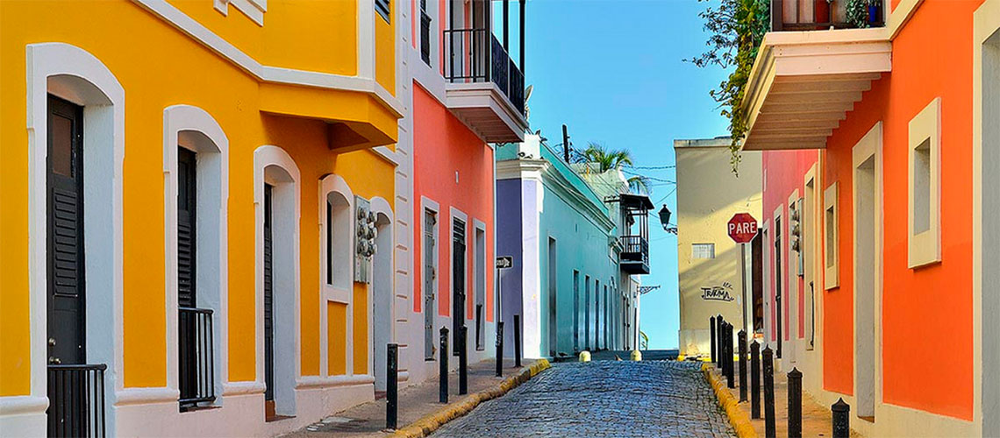

Área más visitada: Viejo San Juan

Una ciudad rodeada de murallas con más de 500 años de historia. Es famosa por sus calles de adoquines azules, sus plazas coloniales y sus casas pintadas de colores vibrantes.
Explora los alrededores
Cerca de San Juan se encuentran lugares icónicos de la isla:
- El Morro: La fortaleza más conocida de la isla. Tiene un campo verde inmenso donde puedes ver el paisaje y la vista al mar.
- Parque de las Palomas: Una zona donde puedes alimentar a cientos de palomas y disfrutar de la vista de la zona.
-
El Coquí: También conocerás nuestro famoso animal, el Coquí, que podrás escuchar a continuación: